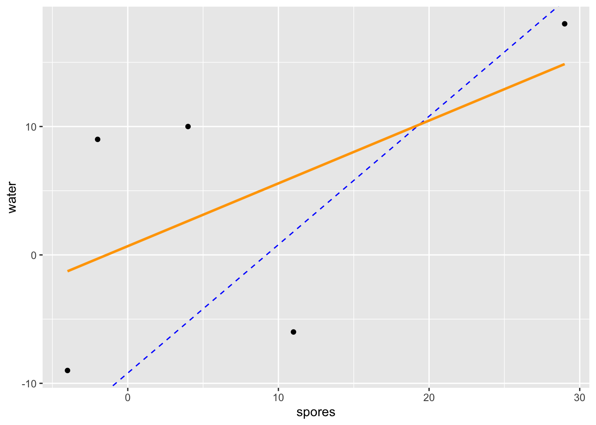
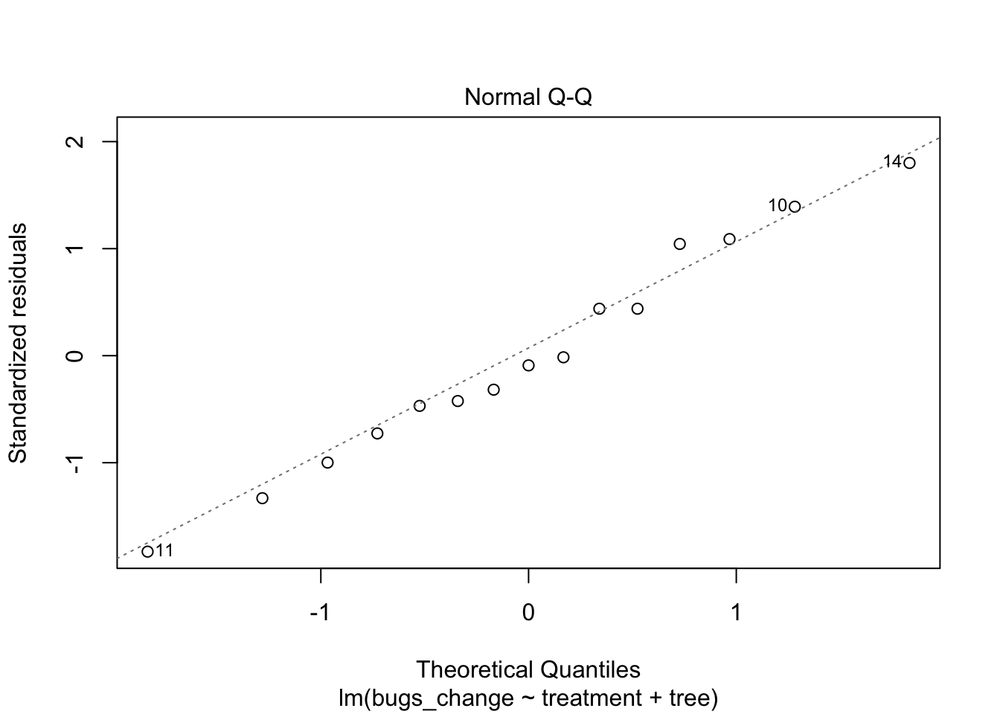

qplot(x = treatment, y = bugs_change, color = tree, group = tree, data = mealybugs) +
geom_line()Assessing the Complete Block Design
Announcements
- HW 5 due Friday 11:59p
- Exam 1 next Thursday
- Office hours (Bass 412)
- No OH on Thurs
- Friday: 10:50a - 12:05p
- Where to get HW help
- Spinelli center tutoring Sun-Thurs 7-9p, Sabin-Reed 301.
- Post questions to #hw5-questions channel on Slack!
Agenda
- MP1 data collection!
- Complete Block design
MP1 data collection
Step 1:
- If you’re approved:
- 10 minutes to go through the checklist.
- Paste anonymous survey link in the spreadsheet.
- If you’re ready, work on your homework!
- If you’re NOT approved
- Use this time to work on your revisions.
Step 2:
- 20 min to participate in as many studies as you can!
- Note: see content warnings
- Please only participate in audio studies if you have headphones
Inappropriate Insects
Modern zoos try to reproduce natural habitats in their exhibits as much as possible. They try to use appropriate plants, but these plants can be infested with inappropriate insects. Cycads (plants that look vaguely like palms) can be infected with mealybugs, and the zoo wishes to test three treatments: 1) water, 2) horticultural oil, and 3) fungal spores in water. Nine infested cycads are taken to the testing area. Three branches are randomly selected from each tree, and 3 cm by 3 cm patches are marked on each branch. The number of mealybugs on the patch is counted. The three treatments then get randomly assigned to the three branches for each tree. After three days the mealybugs are counted again. The change in number of mealybugs is computed (\(before-after\)).
Side-by-side dotplot
We add our blocking factor as color and also as group.
We can see that Tree 2’s infestation was very responsive to the treatments whereas Tree 1’s was not.
Formal ANOVA for Complete Block Design
\[{y}_{ij}={\mu}+{\tau}_{i}+{\beta}_{j}+{e}_{ij}\]
| Source | SS | df | MS | F |
|---|---|---|---|---|
| Treatment | \(\sum_{i=1}^{a}b(\bar{y}_{i.}-\bar{y}_{..})^{2}\) | \(a-1\) | \(\frac{{SS}_{T}}{{df}_{T}}\) | \(\frac{{MS}_{T}}{{MS}_{E}}\) |
| Blocks | \(\sum_{j=1}^{b}a(\bar{y}_{.j}-\bar{y}_{..})^{2}\) | \(b-1\) | \(\frac{{SS}_{B}}{{df}_{B}}\) | \(\frac{{MS}_{B}}{{MS}_{E}}\) |
| Error | \(\sum_{i=1}^{a}\sum_{j=1}^{b}({y}_{ij}-\bar{y}_{i.}-\bar{y}_{.j}+\bar{y}_{..})^{2}\) | \((a-1)(b-1)\) | \(\frac{{SS}_{E}}{{df}_{E}}\) |
Data Analysis Structure
mealybugs tree treatment bugs_change
1 tree1 water -9
2 tree1 spores -4
3 tree1 oil 4
4 tree2 water 18
5 tree2 spores 29
6 tree2 oil 29
7 tree3 water 10
8 tree3 spores 4
9 tree3 oil 14
10 tree4 water 9
11 tree4 spores -2
12 tree4 oil 14
13 tree5 water -6
14 tree5 spores 11
15 tree5 oil 7Formal ANOVA
mod <- lm(bugs_change ~ treatment + tree, data = mealybugs)
anova(mod)Analysis of Variance Table
Response: bugs_change
Df Sum Sq Mean Sq F value Pr(>F)
treatment 2 218.13 109.07 2.9963 0.106846
tree 4 1316.40 329.10 9.0412 0.004603 **
Residuals 8 291.20 36.40
---
Signif. codes: 0 '***' 0.001 '**' 0.01 '*' 0.05 '.' 0.1 ' ' 1There are no statistically significant differences in the reduction in mealy bugs between the three treatment conditions, \(F(2, 8) = 3.00\), \(p = .107\). There are significant differences in the reduction in mealy bugs across trees, however, \(F(4, 8) = 9.04\), \(p = .005\). That is, some trees improved more than other trees.
Informal Analysis Structure
mealybugs_wide <- mealybugs %>%
pivot_wider(names_from = treatment, values_from = bugs_change)
mealybugs_wide# A tibble: 5 × 4
tree water spores oil
<chr> <dbl> <dbl> <dbl>
1 tree1 -9 -4 4
2 tree2 18 29 29
3 tree3 10 4 14
4 tree4 9 -2 14
5 tree5 -6 11 7How to check assumptions
C. Constant effects – think about whether it is reasonable.
A. Additive effects – check Anscombe block plots.
S. Same standard deviations – is the biggest SD less than two times as large as the smallest? check residual versus fitted plot: does the plot thicken?
I. Independent residuals – think about whether it is reasonable.
N. Normally distributed residuals – construct a histogram or normal probability plot of residuals.
Z. Zero mean residuals – construct a histogram or normal probability plot of residuals.
Anscombe Block Plots
- Scatterplots of two levels of the factor of interest.
- Used for
- exploring the data, and
- assessing the additivity (A) condition.
Informal Analysis Structure
mealybugs_wide <- mealybugs %>%
pivot_wider(names_from = treatment, values_from = bugs_change)
mealybugs_wide# A tibble: 5 × 4
tree water spores oil
<chr> <dbl> <dbl> <dbl>
1 tree1 -9 -4 4
2 tree2 18 29 29
3 tree3 10 4 14
4 tree4 9 -2 14
5 tree5 -6 11 7Anscombe Block Plots
qplot(x = spores, y = oil, data = mealybugs_wide) +
geom_abline(intercept = 13.6-7.6, slope = 1, color = "blue", linetype = 2) +
geom_smooth(method = "lm", se = 0, color = "orange")Anscombe Block Plots
qplot(x = spores, y = water, data = mealybugs_wide) +
geom_abline(intercept = 4.4 - 13.6, slope = 1, color = "blue", linetype = 2) +
geom_smooth(method = "lm", se = 0, color = "orange")
Anscombe Block Plots
qplot(x = oil, y = water, data = mealybugs_wide) +
geom_abline(intercept = 4.4 - 13.6, slope = 1, color = "blue", linetype = 2) +
geom_smooth(method = "lm", se = 0, color = "orange")Assessing S Condition
mealybugs %>%
group_by(treatment) %>%
summarize(m = mean(bugs_change),
sd = sd(bugs_change))# A tibble: 3 × 3
treatment m sd
<chr> <dbl> <dbl>
1 oil 13.6 9.66
2 spores 7.6 13.3
3 water 4.4 11.5 mealybugs %>%
group_by(treatment) %>%
summarize(m = mean(bugs_change),
sd = sd(bugs_change)) %>%
summarize(max(sd)/min(sd)) #calculating using min and max function# A tibble: 1 × 1
`max(sd)/min(sd)`
<dbl>
1 1.38Assessing S Condition
\[\hat{{y}}_{ij}={\mu}+{\tau}_{i}+{\beta}_{j}\]
- Where \(\hat{{y}}_{ij}\) are the fitted values, that is, everything but the ticket at the end of the assembly line.
plot(mod, which = 1)If the plot thickens, that is, has a patterning that looks like a funnel, then the S condition is not satisfied.
Assessing N Condition
plot(mod, which = 2)
We’re looking for residuals to be on the line. If so, then we can say they are normally distributed.
Assessing the Z Condition
qplot(mod$residuals, bins = 6)If the histogram centered at zero? Then the Z condition is satisfied.
Sleeping Shrews
Assess the CA-SINZ conditions for the SleepingShrews dataset from example 6.7b in your textbook.
library(Stat2Data)
data("SleepingShrews")
#You'll need the WIDE dataset for the Anscombe block plots
SleepingShrews_wide <- SleepingShrews %>%
select(-ID) %>%
pivot_wider(names_from = Phase, values_from = Rate)Testing Condition for Sleeping Shrews Data
qplot(x = DSW, y = LSW, data = SleepingShrews_wide) +
geom_abline(intercept = 2, slope = 1, color = "blue", linetype = 2) +
geom_smooth(method = "lm", se = 0, color = "orange") #A condition
qplot(x = DSW, y = REM, data = SleepingShrews_wide) +
geom_abline(intercept = 2, slope = 1, color = "blue", linetype = 2) +
geom_smooth(method = "lm", se = 0, color = "orange") #A condition
qplot(x = LSW, y = REM, data = SleepingShrews_wide) +
geom_abline(intercept = -2, slope = 1, color = "blue", linetype = 2) +
geom_smooth(method = "lm", se = 0, color = "orange") #A condition
SleepingShrews %>%
group_by(Phase) %>%
summarize(m = mean(Rate),
sd = sd(Rate)) %>%
summarize(max(sd)/min(sd)) #S condition
mod <- lm(Rate ~ Phase + Shrew, data = SleepingShrews)
plot(mod, which = 1) #S condition
plot(mod, which = 2) #N condition
qplot(mod$residuals, bins = 6) #N and Z conditions